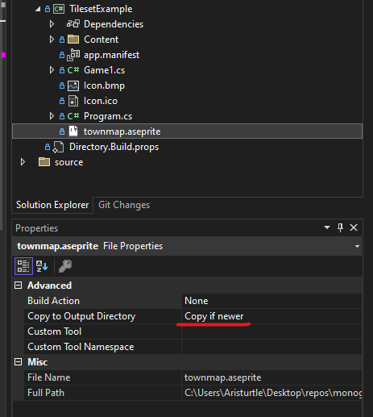

Load The Aseprite File
The purpose of this document is to provide an overview of how to load your Aseprite file so it can be used in your game at runtime.
Overview
The AsepriteFile class is the starting point for everything that can be done with this library. When the contents of your Aseprite file are imported, they are presented to you through the properties of the AsepriteFile instance created. This includes each layer, frame, cel, tag, slice, tileset, and tilemap.
Loading the Aseprite File
There are two ways of loading your Aseprite file to be used in your game project; from the AsepriteFile at runtime or from the XNB preprocessed with the MGCB Editor. Choose the tab below based on which workflow you are using to see an example of doing this.
MonoGame provides the TitleContainer.OpenStream method that opens a stream for a file path that is relative the output of the game executable/assembly. It is platform aware, so it the best option to use instead of using the file path directly. With the Aseprite file in your project, if you are using Visual Studio you can right-click the file, goto Properties and change the Copy to Output Directory property to Copy if newer.

Otherwise; if you are using something like Visual Studio Code you update your .csproj file to include the same setting.
<ItemGroup>
<None Update="townmap.aseprite">
<CopyToOutputDirectory>PreserveNewest</CopyToOutputDirectory>
</None>
</ItemGroup>
Then, to load the Aseprite file at runtime using TitleContainer you can perform the following
Add Using Statements
// MonoGame.Aseprite now uses AsepriteDotNet as the base loader for the Aseprite file
using AsepriteDotNet.Aseprite;
using AsepriteDotNet.IO;
protected override void LoadContent()
{
AsepriteFile aseFile;
using(Stream stream = TitleContainer.OpenStram("file.aseprite"))
{
aseFile = AsepriteFileLoader.FromStream(fileName: "file", stream: stream, preMultiplyAlpha: true);
}
}
At this point, you have the Aseprite file loaded and ready to use transform into a more meaningful content type like a Sprite, TextureAtlas, Spritesheet, Tileset, Tilemap, or AnimatedTilemap.
Tip
Loading the Aseprite file from disk is like loading any asset in your game, whether it is done using the MGCB Editor or not. It should be done where you load your game assets. For instance, within the LoadContent method of your Game class like shown in the example above.
Next Steps
Now that you have the AsepriteFile object created, transform the data inside to one of the utility classes provided by MonoGame.Aseprite. To learn more, see the Examples Overview page for more information.